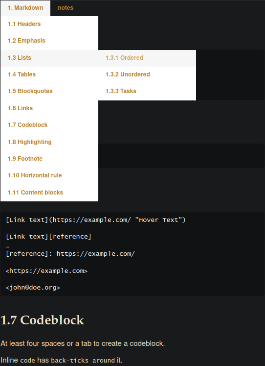

# Überschrift H1
## Überschrift H2
### Überschrift H3
#### Überschrift H4
##### Überschrift H5
###### Überschrift H6Hervorheben (kursiv): *Beispiel* oder _Beispiel_
Betonen (fett): **Beispiel** oder __Beispiel__
Hervorheben + Betonen: ***Beispiel*** oder ___Beispiel___
Durchstreichen: ~~Beispiel~~1. Nummeriertes Listenelement
2. Nummeriertes Listenelement
3. Nummeriertes Listenelement- Ungeordnetes Listenelement
- Ungeordnetes Listenelement
- Ungeordnetes Listenelement
+ Ungeordnetes Listenelement
+ Ungeordnetes Listenelement
+ Ungeordnetes Listenelement
* Ungeordnetes Listenelement
* Ungeordnetes Listenelement
* Ungeordnetes Listenelement- [ ] unchecked
- [x] checkedGeordnet:
1. Erste Ebene
1. Zweite Ebene
Ungeordnet:
- Erste Ebene
- Zweite Ebene|Links |Zentriert |Rechts |
|:------|:---------:|------:|
|1 |1 |1 |
|2 |2 |2 |
|3 |3 |3 |> Ein zitierter Absatz
>> Ein zitierter Absatz innerhalb eines Zitats[Text zum Link](http://beispiel.com/)
[Text zum Link][Verweis]
…
[Verweis]: http://beispiel.com/
<http://Beispiel.com>
<max@mustermann.de>Mindestens vier Leerzeichen oder einen Tabulator um einen Codeblock zu erzeugen
Ein Text mit einer Fussnote [^1].
…
[^1]: Die Fussnote am Ende des Dokuments.Ein Text mit einer Fussnote [^Dies ist die eigentliche Fussnote.].***
---
___
* * *
- - -
_ _ _`/kapitel1.txt`
`/programm.py`
`/tabelle.csv`convert markdown files into html5
